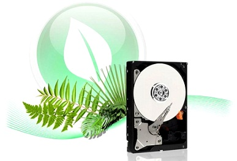

Для чего нужен бэкап?
Такая катастрофа как потеря информации может настигнуть почти каждого пользователя, кем-бы он не был. Вы не можете этого ожидать. К примеру, вы можете очень
удивиться непонятной пропаже вашей папки со свадебными видео и фотографиями или макетами и чертежами.
Какой же выход тогда вы скажите из этой ситуации? Для хранения важных данных на компьютере лучшей идеей была бы выбрать жесткий диск, а не рассчитывать на DVD и CD диски,
так как их ждет такая же участь, как и дискеты. Облачные технологии еще слабо развиты,
чтобы выделить вам 1 или 2 терабайта пространства за вменяемую сумму денег. (Если вы из Бреста, то дешевле
купить компьютер в Бресте, заказав на brest.cooler.by)
Лучшим решением в такой ситуации будет прибегнуть к помощи встраиваемых дисков. Советуем обратить свое внимание на диски WDCaviarGreen. Он отличается низкой рабочей
температурой и малой шумностью в работе, что продлевает ему его существование. Эта линейка еще имеет такую фишку, как ShockGuard, которая защищает накопители от повреждений.
Также есть в этой линейке фишка NoTouch, которая защищает как диск, так и данные, хранящиеся на нем.

Следующим вариантом сохранения важных данных будет использование внешних накопителей, к примеру, HPSimpleSave. Очень большое число производителей электроники
устремились в их изготовление. Каждый производитель выпускает
продукт с пластмассовым боксом под своей маркой. В таком случае люди обращают большое внимание на бренд.
И наконец, вы можете использовать двух- или четырех дисковые системы хранения данных. Один из таких систем – накопитель WDMyBookThunderboltDuo.
Он позволит вам даже и не задумываться о безопасности ваших данных, поскольку он делает резервные копии на жестких дисках.
Как корректно сделать резервное копирование?
Вручную или автоматически?
Лучше конечно автоматически, поскольку создавая вручную, вы можете просто не успеть нажать нужную кнопку. Сохраняя же все свои файлы на внешний диск, резервная копия
создается на нем автоматически. Зачастую с большинством жестких дисков поставляются программы SmartWare и HPSimpleSave.
Эти программы защищают вашу информацию в фоновом режиме и используют минимум ресурсов ПК.
Читайте также:
Твердотельный SSD накопитель, преимущества и недостатки.
Как выбрать жёсткий диск?
Следующая статья:
Компьютерный корпус весом в 13 кг.